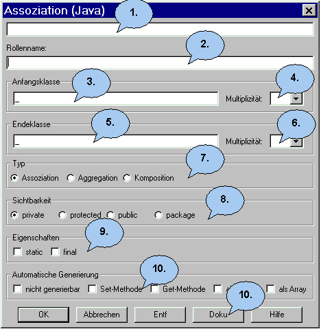

Der Assoziationen Dialog |
|
 1. Geben Sie hier den Namen der Assoziation ein. 2. Hier können Sie einen Rollennamen vergeben. 3. Der Name der Anfangsklasse steht in diesem Feld. Er kann in diesem Dialog nicht verändert werden. 4. Hier können Sie die Multiplizität der Assoziation auf Seite der Anfangsklasse eingeben. Es stehen Ihnen mehrere Vorschläge zur Auswahl. 5. Der Name der Endeklasse steht in diesem Feld. Er kann in diesem Dialog nicht verändert werden. 6. Hier können Sie die Multiplizität der Assoziation auf Seite der Endeklasse eingeben. Es stehen Ihnen mehrere Vorschläge zur Auswahl. 7. Wenn Sie anstelle einer Assoziation eine Aggregation oder eine Komposition als Beziehungstyp möchten, können Sie das an dieser Stelle festlegen. 8. Hier können Sie den Zugriff der Assoziation festlegen. Sie haben die Auswahl zwischen: private: ein private-Objekt wird erzeugt 9. Hier können Sie zusätzliche Eigenschaften der Assoziation angeben. Sie haben die Auswahl zwischen: static: eine statische Assoziation 10. Möchten Sie Get- und Set-Methoden für die
Assoziation automatisch generieren, müssen Sie diese Felder
anklicken.
|
Zurück zur Dialog Übersicht |
Zurück zur Startseite |